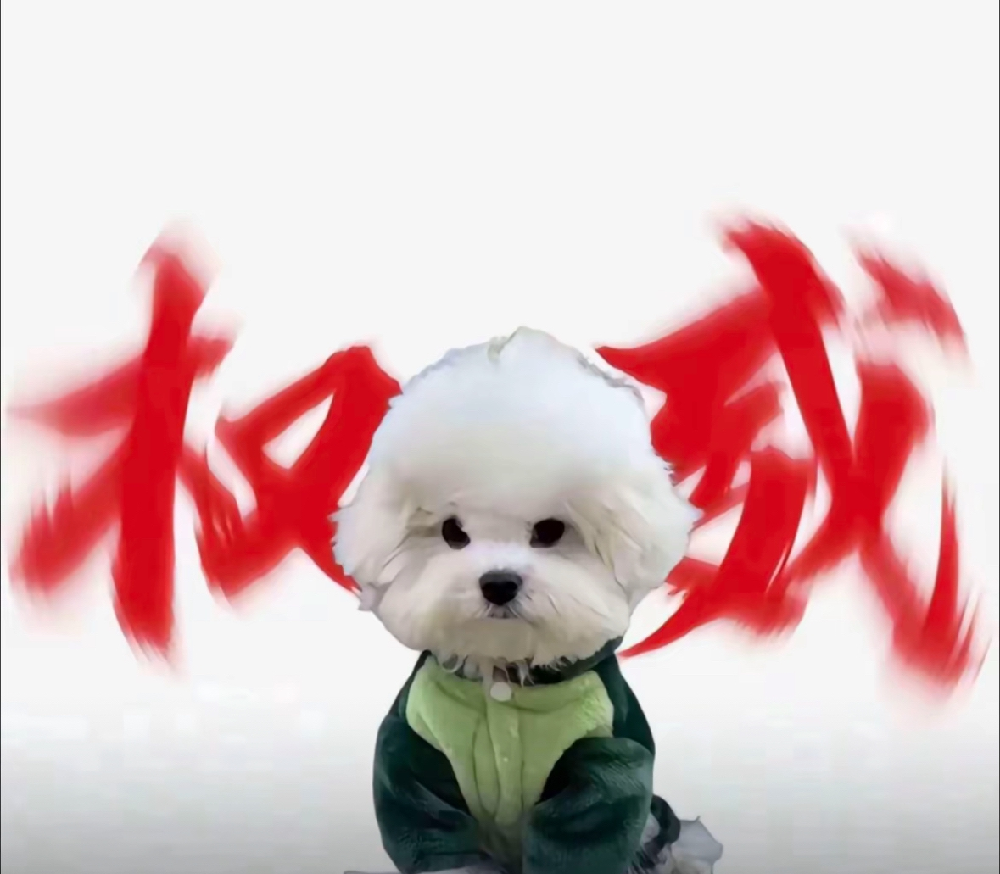

姨姨们，我小抖不爱跳这个
果然,男孩子从小不能太胖....
女孩子别幻想了，首先你得是个尤物[捂脸]
翻开历史，密密麻麻的都是吃女人
＂上层多纳妾，百姓难娶妻＂，其实一夫一妻制真的是保护多数男性的利益。
古代的妾就是替夫人分摊生育风险的[捂脸]代Y的另一种形式！
古代的时候，如果有个绣娘技术特别好，还没有丈夫，就会被某个达官贵族的抢回家纳为妾，这样你所有的产物都属于男的
为什么有人会觉得这是三，认真看完视频了嘛，这是被奴役的女子，商品化人口买卖，和三不是一回事啊！！！
新疆人对海的执着，老天爷都听到了
我听见海浪的声音，站在城市的最中央～
路人:哎我想问一下这个咋弄呢 车主:不要，不要，不要激动[泪奔][泪奔][泪奔][捂脸][捂脸][捂脸]
打开抖音全是车祸，谁受的了啊[捂脸]
不知道的还以为全国第一起车祸呢[黑脸]
九天停更也能被自媒体扒出来做个视频[捂脸]
人民币一万8[泪奔][泪奔]
1万8的是32寸，看错了55寸是5万2，65寸是7万6，不好意思各位[逞强落泪]
30W日元[微笑][微笑]人民币15W[舔屏]
当时第一次看魏征吃菠菜感觉太假，直到我看到主持人安琪吃棉花糖。
魏征爱吃的是醋芹，唐朝醋不便宜，芹菜就更不便宜了，魏征又是出了名的清廉所以大部分时候都是吃不上的[捂脸]
别管我爱不爱吃，领导喜欢看我出丑，我就出个丑呗
历史上是醋芹
这样宽容顽皮的君王，真让人羡慕
魏征夫人是蔡根花宝贝[九转大肠]
谁有央行的货，我下6个点收，权当交个朋友
这个子涵凭借一己之力，把这个挑战赛拔高了好几个档次。。。
《请选手不要与球沟通》《球听明白了》
前面都忍住了，直到扎杆打到鼻子那里劳资真是绷不住了[捂脸]
全国青少年犯规大赛。
那时候马冬梅开球 弹幕都在刷快跑哈哈哈哈哈哈哈
我以为子涵和马冬梅是代称，没想到是真的[九转大肠][九转大肠][九转大肠]
子涵不语 只是一味的晋级[捂脸][捂脸]
昨晚睡前刷到这一幕被迫再笑一小时[捂脸]
我真笑死了哈哈哈哈哈哈哈哈
子涵：没有杆法，没有技巧，全靠运气
何秋亊喜欢的类型名单如下：
哇好棒～
集齐410个何秋亊生日快乐
切鲁约特：部落里我跑的是最慢的了，酋长怕我饿死给我介绍了这个活[流泪]
冷知识：奶奶是国家一级歌手，还是《never gonna give you up》原唱
奶奶开口的那一刹那，真的惊到我了[赞]
你这眼距太大了，没对上焦
我就看过比熊这家，还有甜豆十三他们。 我一直觉得模仿一两个视频玩玩梗很正常，但是连宠物都得拿公仔凑数，一直发不尴尬吗？
不会就是那个宝宝头那个吧[微笑][微笑][微笑][微笑]
宝宝头还说停止围剿[微笑]
我以为是他们，目前只看过他们的[九转大肠]
不是，宝宝头没艾特我以为他自己心里有数呢，艾特过呢[宕机]
那个宝宝头，之前刷过两次，猫猫和狗狗有点丑丑地[捂脸]
我会站在麻麻这边[愉快] 
有很多人抄袭B熊麻麻我刷到有灰泰迪一家贝灵顿一家还有这个宝宝头，他们一开始有艾特原创现在都不艾特了[泪奔]说没抄袭那为啥说话要学B熊麻麻的语气还有“叫谁吃谁就吃”好咕咕“来谢谢大家”[疑问][尬笑]
不要哭我出击了
而且那边的评论区跟中了毒一样，跟他们说版权的事，他们给你说自己就喜欢那个宝宝头，牛头不对马嘴，让人心累，交流困难[憨笑]
我去那边，真的太过分了，还有那边的粉丝在帮忙说话，说自己就喜欢宝宝头怎么了，原创又怎样。我服了气死我了！！！[流泪][流泪]心疼麻麻[快哭了]
但是大家不要攻击宝宝头啊 狗狗没做错什么 法斗那个品种就是那样 主人做错了骂主人就好了
她说的好咕咕听的我浑身难受，别难受姐姐
天哪，说话好可爱呀，就是怎么感觉小比熊麻麻说话像哭过的样子
关于那个私信骂麻麻的人 还有那个弹幕 我想说 狗狗排队吃饭的视频 国外那个我看了 国外那个博主全程只是念狗狗名字 不一样 不要偷换概念 但是麻麻自己的造的梗 和魔性可爱的声音 确实是原创 “麻麻叫谁吃谁就吃”也可以发音为呲 “好咕咕”是狗狗 咕咕是来自麻麻不标准的普通话 可爱的网友起的咕咕 很有意思 也很有萌点 还有 “来 谢谢大家” 模仿者都觉得很可爱 翻拍 会带有小比熊麻麻的话题 毕竟我见带话题的博主还是很多 我希望你们不要攻击一个真心喜欢宠物的小女孩 网络可以讲道理 但没必要一上来就骂人 [比心]
我关注博主是因为她可爱的发音，好咕咕 不是什么点名排队吃饭
我刷到过宝宝头，当时没仔细看文案，我还以为本来就是翻拍呢，怎么不标明[流泪][流泪]
那边粉丝话术挺一致的，“无所谓原不原创”＝知道抄袭了但是我不想认[黑脸]
抖音把我判给b熊妈妈了 那边听起来感觉是为了拍而硬拍 没狗就弄个玩具[捂脸]
京东在这次关税大战为国内内销开拓市场拿出两千亿，就问美团为这次危机做了什么
我现在就在跑京东，京东外卖最干净了。美团全是小作坊
我一直觉得雷总笑脸给多了[九转大肠]
我才意识到，出车祸的车多了去了，为什么就找小米[微笑]
这段话的含金量还在上升[捂脸]
难得有对人民好的企业家，结果被这么一搞[微笑]
因为他做了很多企业能做却不做的事
谁的小米SU7不敢开了，可以送我[微笑][微笑][微笑]
派派是不是有伏羲骨啊
李孝常：说好了一起上的盟友呢，现在砍我一个人的头[泣不成声]
孩子：[泪奔][泪奔][泪奔]原来我从小就活在父母的pua里面
请教一下，孩子吃饭的时候老是突然愣住怎么办？[微笑]
Read more: